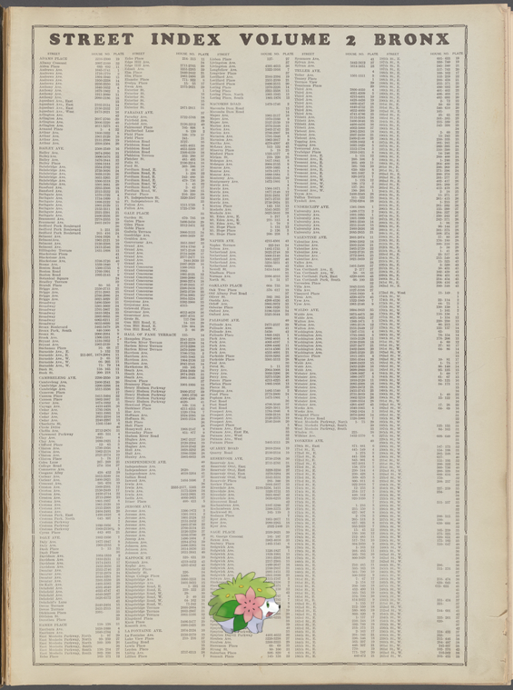

-
 Totodile – Who is Eagan?!
Totodile – Who is Eagan?! -
Happiny, Gyarados @ Brig. Gen. Joseph Reed.
-
Sandshrew ; The Waldorf-Astoria
-
Zangoose – Ober Ammergau..
-
Makuhita ; [Cunningham], [Peter]. ALS to 1848 Apr. 22!
-
 Bunnelby + Waldorf Astoria
Bunnelby + Waldorf Astoria -
Liepard – Avery, J. T., 1830.
-
Latios, Sceptile – France, 1799-1801. Campaign in Egypt.!
-
Keldeo-Ordinary, Barbaracle ; EM. 6396.
-
Torchic on The Waldorf-Astoria.
-
Manectric – Waldorf Astoria.
-
Exeggcute, Seaking ; Armand Guéraud, imprimeur et littérateur, de Nantes.
-
Beldum ; Floor plan of Stanley Court.
-
Hitmonlee on The smile of her I love!
-
Shedinja | Si sabrá mas el discipulo?!
-
Shaymin-Land on Street Index, Volume 2, Bronx: [Adams Place - 263rd Street W.].
-
Dustox | Letter to [Henry Laurens, Philadelphia.].
-
Arbok + The Commodore Hotel
-
Zorua, Phantump, Gengar | Bentley, Richard. ALS to 1837 Aug. 18.
-
@ France, 1812.
-
Azurill | [Peasant dance]!
-
Poliwhirl on Document
-
Shellos, Zigzagoon ; [The Westmoreland manuscript of the poems].
-
Darkrai, Gengar – Nay, Nay, Pauline.
- France, 1897-1904">
-
France, 1650-1678. Louis XIV.">Watchog on France, 1650-1678. Louis XIV.
-
 Document">
Document"> -
![Basculin-Red-Striped on Johnsons Creek [Village]; Hartland [Village]; Pekin [Village]; North Ridge [Village]; H… http://digitalcollections.nypl.org/items/741f8030-c5f9-012f-9e1a-58d385a7bc34](media/finding-EujvtpHf.png)
-

-

-